3.7. Naive Bayes¶
Naive Bayes methods are a set of supervised learning algorithms
based on applying Bayes’ theorem with the “naive” assumption of independence
between every pair of features. Given a class variable  and a
dependent feature vector
and a
dependent feature vector  through
through  ,
Bayes’ theorem states the following relationship:
,
Bayes’ theorem states the following relationship:
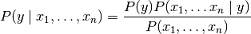
Using the naive independence assumption that

for all  , this relationship is simplified to
, this relationship is simplified to
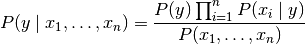
Since 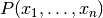 is constant given the input, we can use the following classification rule:
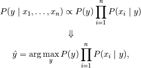
and we can use Maximum A Posteriori (MAP) estimation to estimate
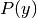 and 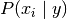;
the former is then the relative frequency of class
in the training set.
The different Naive Bayes classifiers differ mainly by the assumptions they make regarding the distribution of .
In spite of their apparently over-simplified assumptions, Naive Bayes classifiers have worked quite well in many real-world situations, famously document classification and spam filtering. They requires a small amount of training data to estimate the necessary parameters. (For theoretical reasons why Naive Bayes works well, and on which types of data it does, see the references below.)
Naive Bayes learners and classifiers can be extremely fast compared to more sophisticated methods. The decoupling of the class conditional feature distributions means that each distribution can be independently estimated as a one dimensional distribution. This in turn helps to alleviate problems stemming from the curse of dimensionality.
On the flip side, although Naive Bayes is known as a decent classifier, it is known to be a bad estimator, so the probability outputs from predict_proba are not to be taken too seriously.
References:
- H. Zhang (2004). The optimality of Naive Bayes. Proc. FLAIRS.
3.7.1. Gaussian Naive Bayes¶
GaussianNB implements the Gaussian Naive Bayes algorithm for classification. The likelihood of the features is assumed to be Gaussian:
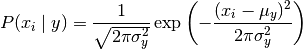
The parameters 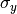 and  are estimated using maximum likelihood.
are estimated using maximum likelihood.
>>> from sklearn import datasets
>>> iris = datasets.load_iris()
>>> from sklearn.naive_bayes import GaussianNB
>>> gnb = GaussianNB()
>>> y_pred = gnb.fit(iris.data, iris.target).predict(iris.data)
>>> print("Number of mislabeled points : %d" % (iris.target != y_pred).sum())
Number of mislabeled points : 6
3.7.2. Multinomial Naive Bayes¶
MultinomialNB implements the Naive Bayes algorithm for multinomially
distributed data, and is one of the two classic Naive Bayes variants used in
text classification (where the data are typically represented as word vector
counts, although tf-idf vectors are also known to work well in practice).
The distribution is parametrized by vectors
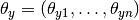
for each class , where  is the number of features
(in text classification, the size of the vocabulary)
and 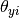 is the probability
of feature appearing in a sample belonging to class .
is the number of features
(in text classification, the size of the vocabulary)
and 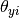 is the probability
of feature appearing in a sample belonging to class .
The parameters 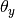 is estimated by a smoothed version of maximum likelihood, i.e. relative frequency counting:
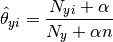
where 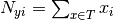 is
the number of times feature appears in a sample of class
in the training set  ,
and 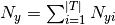 is the total count of
all features for class .
,
and 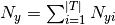 is the total count of
all features for class .
The smoothing priors  accounts for
features not present in the learning samples and prevents zero probabilities
in further computations.
Setting
accounts for
features not present in the learning samples and prevents zero probabilities
in further computations.
Setting  is called Laplace smoothing,
while 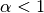 is called Lidstone smoothing.
is called Laplace smoothing,
while 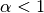 is called Lidstone smoothing.
3.7.3. Bernoulli Naive Bayes¶
BernoulliNB implements the Naive Bayes training and classification algorithms for data that is distributed according to multivariate Bernoulli distributions; i.e., there may be multiple features but each one is assumed to be a binary-valued (Bernoulli, boolean) variable. Therefore, this class requires samples to be represented as binary-valued feature vectors; if handed any other kind of data, a BernoulliNB instance may binarize its input (depending on the binarize parameter).
The decision rule for Bernoulli Naive Bayes is based on
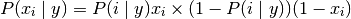
which differs from multinomial NB’s rule
in that it explicitly penalizes the non-occurrence of a feature
that is an indicator for class ,
where the multinomial variant would simply ignore a non-occurring feature.
In the case of text classification, word occurrence vectors (rather than word count vectors) may be used to train and use this classifier. BernoulliNB might perform better on some datasets, especially those with shorter documents. It is advisable to evaluate both models, if time permits.
References:
- C.D. Manning, P. Raghavan and H. Schütze (2008). Introduction to Information Retrieval. Cambridge University Press, pp. 234-265.
- A. McCallum and K. Nigam (1998). A comparison of event models for Naive Bayes text classification. Proc. AAAI/ICML-98 Workshop on Learning for Text Categorization, pp. 41-48.
- V. Metsis, I. Androutsopoulos and G. Paliouras (2006). Spam filtering with Naive Bayes – Which Naive Bayes? 3rd Conf. on Email and Anti-Spam (CEAS).